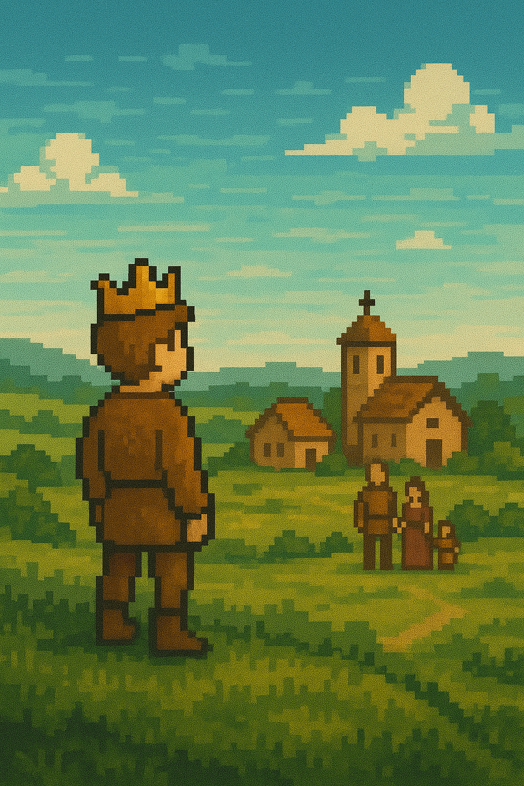

You invest all of you're riches into you're village
You lose you're palace, and all you're fine possessions returning to
you're village with nothing but a crown. You're village meets you
with mixed reception. Some view you as a hero, who saved them from
poverty. Others remember you as a symbol of corrupting greed
on the hill, you could have helped them sooner. As you settle back
into you're life as a peasant you keep the crown as a reminder of
the lessons you've learned. You live the rest of you're life seeking
redemption for you're past, making a name for yourself along the
way. You are remembered as a noble, a betrayer, a generous
samaritan, and a hero. You're legend is shrouded in myth and changes
based on who you ask. You die seeking redemption, never satisfied,
never understood. You're myth is remembered, and you're village
saved.
Return to start